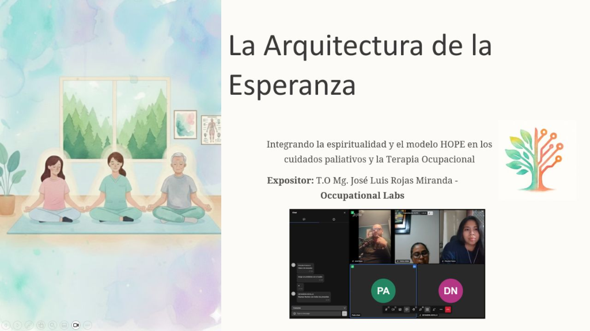
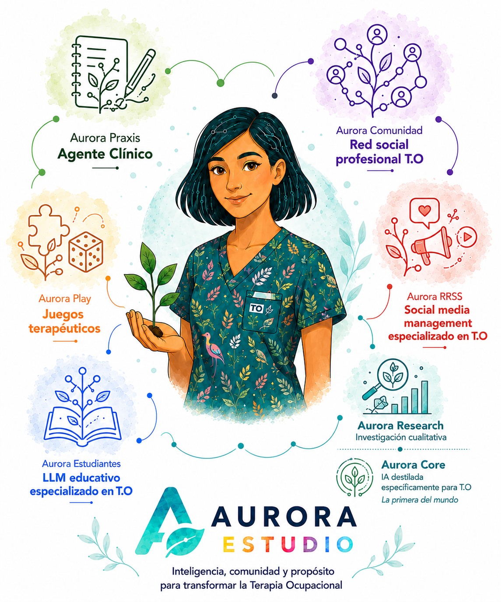

Desarrollamos ecosistemas EdTech, sitios web de alto impacto y soluciones de IA personalizadas para optimizar la gestión de profesionales de la salud y educación.

¿Cómo integramos la dimensión espiritual en la Terapia Ocupacional de forma práctica y estructurada? 🤔✨
Exploramos la pauta HOPE, una herramienta clínica para evaluar la espiritualidad y conectar las fuentes de esperanza del usuario con sus ocupaciones significativas.
Tras su exitosa primera versión en Chile, expandimos este modelo a Ecuador compartiendo nuestra adaptación específica para Terapia Ocupacional. ¡Una salud consciente y con sentido es una necesidad en toda Latinoamérica! 🌍💼
Chile — 21 de Marzo 2026
Ecuador — 8 de Junio 2026
Creación de sitios web de alto impacto, interfaces intuitivas y ecosistemas digitales optimizados para potenciar la presencia online de profesionales y clínicas.
Destilación de modelos, RAG e IA local privada. Flujos de trabajo académicos eficientes y formación en IA ética para investigadores, directivos y estudiantes.
Saber másDerechos y deberes de los pacientes en el marco legal chileno
Exploración profunda del derecho al acompañamiento espiritual en Chile, integrando la normativa legal vigente para profesionales de la salud.

Transforma tu práctica docente integrando la Inteligencia Artificial de forma ética y humana.

Espiritualidad en el desempeño ocupacional: Adaptación al Contexto Chileno.
Construyendo versión asíncrona.
Tecnología y marcos epistemológicos diseñados exclusivamente para potenciar el razonamiento clínico, la gestión y la formación en Terapia Ocupacional.
Haz clic en los puntos para explorar cada producto

No. El curso está diseñado desde cero para docentes sin experiencia técnica previa.
Certificado oficial descargable compatible con LinkedIn y CV profesional.

Terapeuta Ocupacional | Magíster en Docencia | Desarrollador de Soluciones Digitales
Especialista en innovación educativa y transformación digital con trayectoria liderando procesos de acreditación y gestión curricular en educación superior. Experto en la integración de IA aplicada y el desarrollo de software institucional para la optimización de procesos académicos.
Se parte de los profesionales que están liderando la innovación digital con alma.